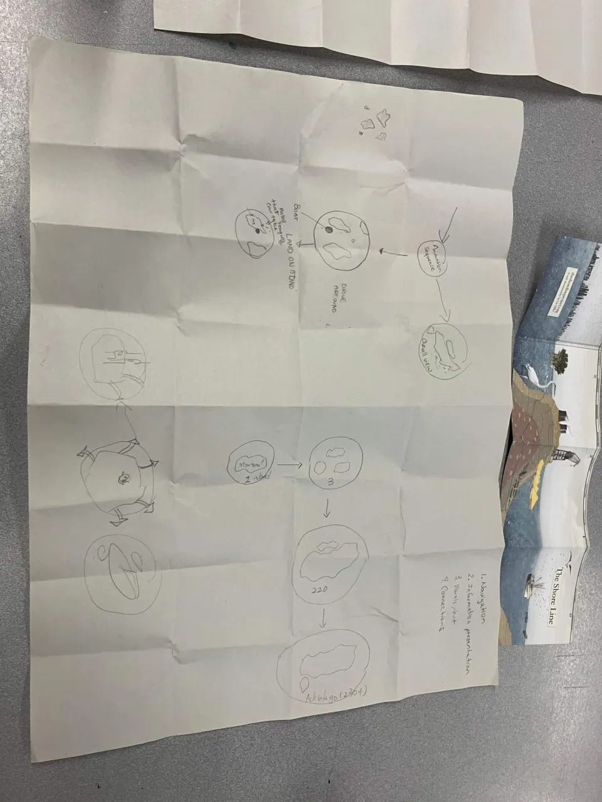
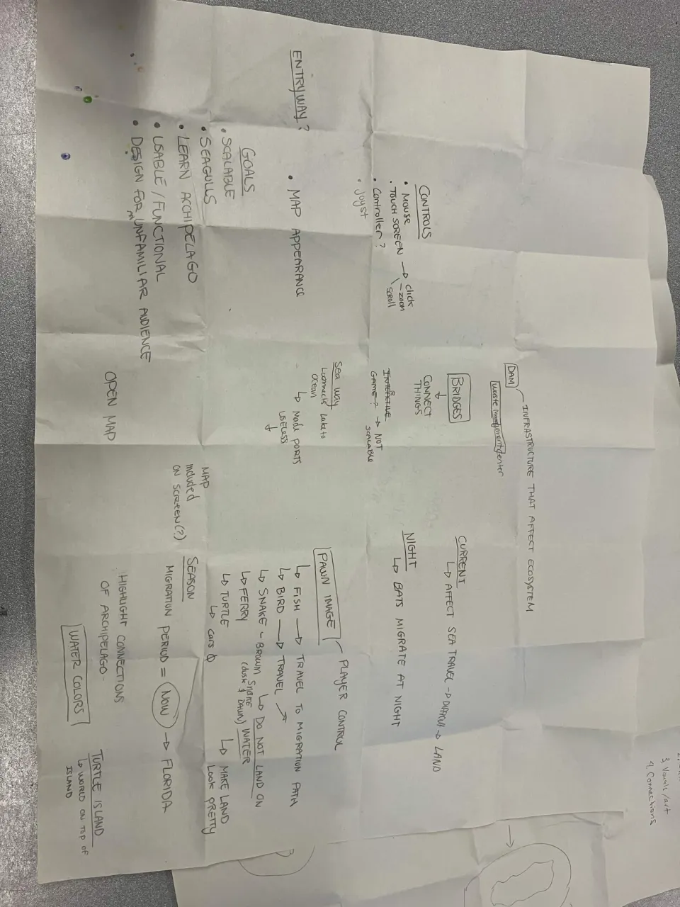
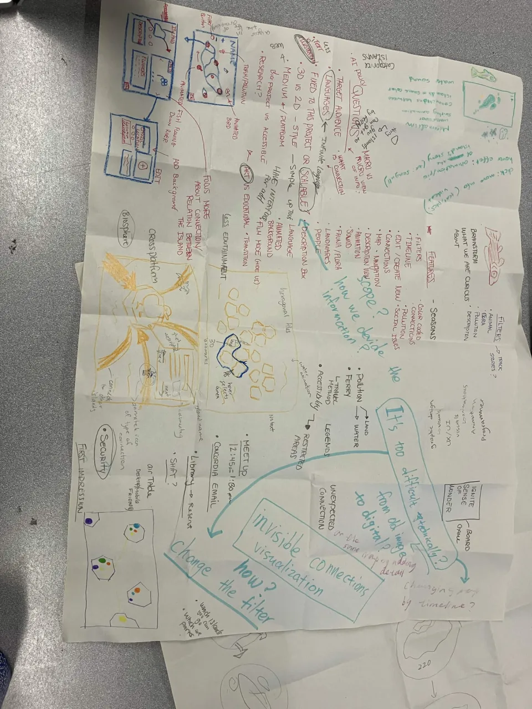

First client meeting
& mapping connections
Thinking about what visitors will discover and how they will explore.
View the 2D filter concept & user workflow ↓This week, our group met with the client for the first time to discuss Documentary Encounters in the Archipelago. Our project is an interactive map of the Hochelaga Archipelago. The meeting helped me understand what we need to consider beyond the map’s appearance: who will use it, what they might discover, and how the client could continue adding content after our work is finished.
One question from the meeting stayed with me: what do we want visitors to take away from the experience? Someone unfamiliar with Montreal might need an introduction to the archipelago, while someone who already knows the area might be interested in unexpected stories or connections. We also discussed how some museum visitors may not immediately want to interact with a map. This made me think about the entrance to the experience. Before designing detailed controls, we need to give people a reason to explore and make their first interaction easy to understand.
During our brainstorming, we explored travelling through the map by boat or from the perspective of a bird, fish, or turtle. I found this idea interesting because the way someone moves could influence the connections they discover. A boat might follow accessible waterways, while an animal’s movement could draw attention to habitats or migration. Our paper sketches explored navigation, information panels, filters, and different ways of showing relationships between islands. I began to see how the interaction itself could help communicate the project’s content.



Environmental issues also came up during the meeting, including pollution and birds eating trash. These examples made me think about connections that are difficult to see on a conventional map. Water, animals, and human activity move between islands, so an island’s story extends beyond its geographical boundary. Filters or different perspectives could help visitors discover these relationships. However, we still need to decide which ideas are meaningful and realistic to develop. We discussed mini-games and hidden discoveries, but their purpose would need to connect clearly to the stories being presented.
Another consideration is how the project will be maintained. The client would ideally be able to add or change content independently, which means we need to plan for that from the beginning. We also discussed French, English, and the possibility of including an Indigenous language through collaboration. These conversations reminded me that our design decisions depend on further communication with the client and the people contributing to the project.
Design exploration / Proposed direction
One map. Different ways of seeing.
At this stage, I am leaning toward a mainly 2D map that visitors can explore by dragging, zooming, and clicking on islands. Building on our discussion of filters, I would like to explore perspectives as a way of changing what the map reveals. A human perspective could highlight access points, bridges, and visitor stories, while a bird perspective could reveal habitats and movement between islands. The geography would stay the same, but the relationships brought into focus would change.
I also like the idea of letting visitors gradually build a map of connections through the stories they open. For example, after reading about access to one island, they could switch to a bird perspective and discover its relationship with another habitat. Opening that related story could reveal a connecting line with a short explanation. This would give the filters a role in storytelling and encourage visitors to explore further.
- 01 / EnterExplore the 2D map
Choose a language, then browse the islands.
- 02 / DiscoverOpen an island story
Read, look or listen to a documentary excerpt.
- 03 / ReconsiderSwitch perspective
Use a filter to reveal another set of relationships.
- 04 / ConnectFollow a related story
Open another island and see why the two are connected. Continue exploring from there.
For an initial test, I would keep this to three islands and two perspectives: human and bird. I want to find out whether visitors understand what changes when they switch filters, and whether the connections encourage them to open another story. This is a direction I would like to discuss with the group and client before treating it as a final design.
As a group, we outlined milestones that move from a static map to navigation, additional information, and final polish. Our next step is to review our Figma prototypes and combine them into a shared direction before the October 7 client meeting. For me, the main challenge now is narrowing our many ideas into an experience that is understandable, engaging, and manageable for our team to build.